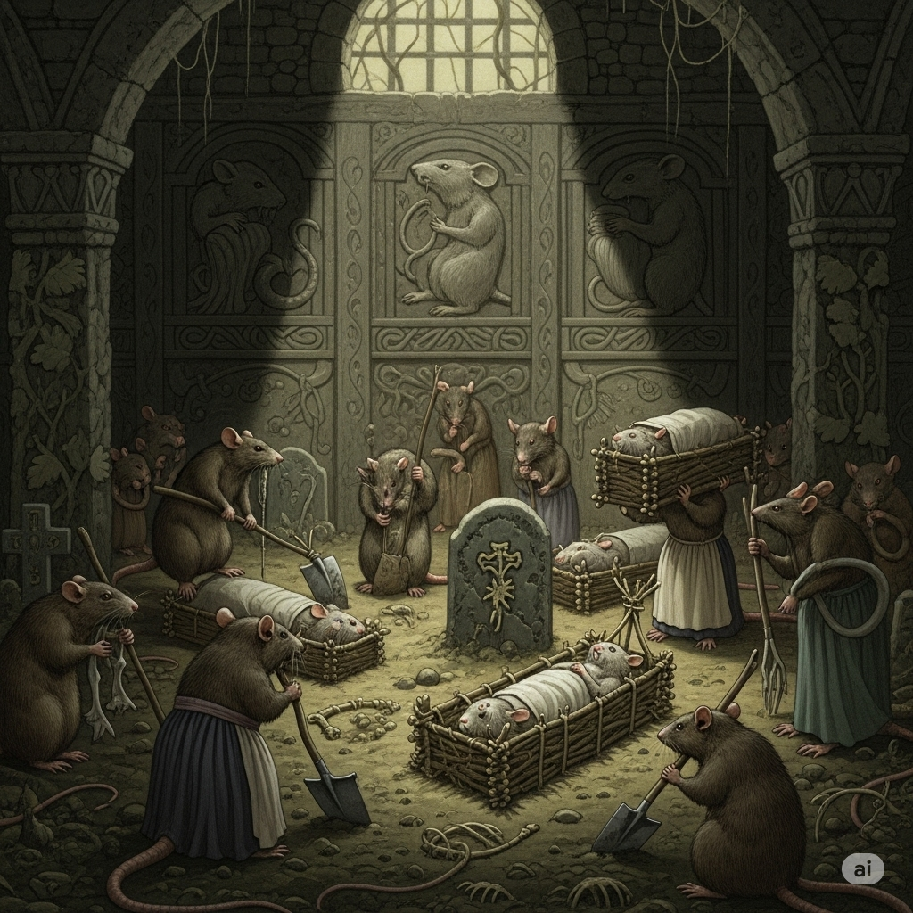

En esta historia inquietante, Bram Stoker se aleja de lo sobrenatural para sumergirse en el horror real y social. Un joven inglés pasea por los barrios marginales de París y se adentra en una zona descuidada, dominada por la pobreza extrema. Allí es observado por una anciana repulsiva, quien lo sigue con la intención de robarle y asesinarlo. Pronto, el protagonista descubre que esa mujer forma parte de un grupo de carroñeros humanos que viven en las calles, aprovechándose de los cuerpos de personas solitarias para robarles e incluso alimentarse de ellos. La persecución se vuelve angustiante. El joven corre por calles desiertas, mientras la anciana y sus cómplices lo acechan. Las ratas —animales que simbolizan la muerte, la enfermedad y la miseria— aparecen constantemente, alimentándose de cadáveres y basura, reflejando la degradación de quienes actúan igual que ellas. Finalmente, el protagonista logra escapar, pero queda marcado por la experiencia. Es un cuento crudo y perturbador que critica la deshumanización provocada por la pobreza y expone la delgada línea entre la civilización y la barbarie.
